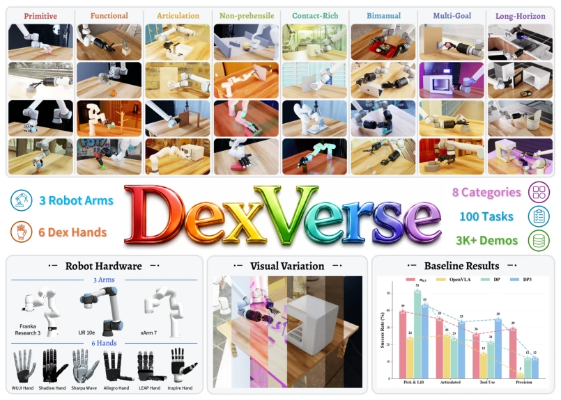
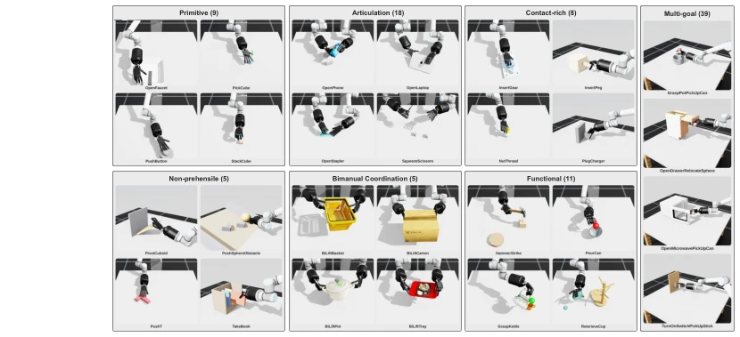
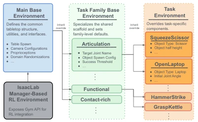
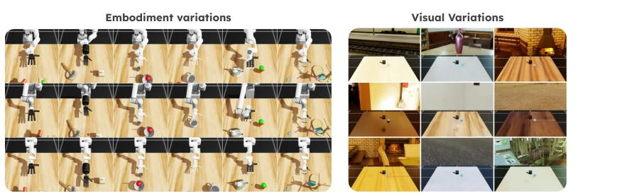
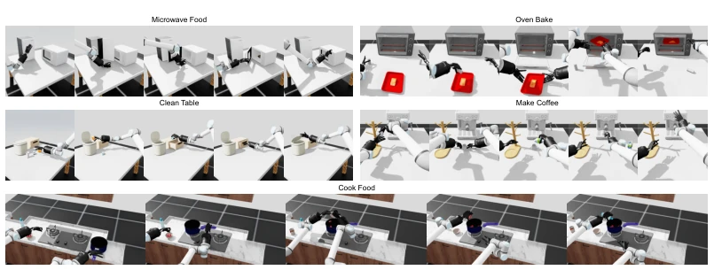

DexVerse attempts to end the benchmark arms race in dexterous manipulation with 100 tasks + multi-robot arms + multi-visual variants, showing considerable ambition. However, upon reviewing the experimental results, the sentiment is akin to being crushed by a robotic hand: the current SOTA average success rate is merely 34%, and VLA pre-training surprisingly offers no advantage for dexterous hands, whereas diffusion policies prove more stable. This is hardly a benchmark; it is simply a scene of harsh reality. Although the modular design is quite appealing and VR teleoperation data collection is also rigorous, core issues such as contact force control and sub-millimeter alignment remain unsolved. For teams seeking to capitalize on the VLA trend, this data may serve as a deterrent; for those genuinely pursuing robustness control, it serves as a whetstone. Do not expect it to solve general problems; it simply honestly informs you that current models are still a vast distance away from true dexterity.
Dexterous manipulation is the core of general-purpose robots, yet existing benchmarks are mostly limited to grippers or single robotic arms, lacking systematic evaluation of multi-modal interaction, visual variation, and cross-embodiment generalization [1, 2]. CALVIN [22], LIBERO [25], etc., focus on language-conditioned tasks, DexMimicGen [10] focuses on data generation, and DexJoCo [27], while involving dexterous hands, has narrow task coverage. There is a lack of a unified platform to evaluate policy generalization capabilities in contact-rich scenarios. DexVerse aims to fill this gap by evaluating the diversity of tasks, vision, and embodiment through a unified framework, revealing the true shortcomings of current policies in fine manipulation and long-horizon tasks.

Figure 1: Overview of DexVerse, a modular benchmark for multi-task, multi-embodiment dexterous manipulation with diverse tasks, visual variations, demonstration datasets, and baseline evaluations.

Figure 2: Visualization of selected tasks from the DexVerse environments.
The overall workflow is built upon a modular simulation environment based on Isaac Lab. First, the task library comprises 100 tasks divided into 8 categories, decoupling task logic from robotic arm/hand models via configuration-driven mechanisms [4]. Second, it supports 3 types of robotic arms and 6 types of dexterous hands, allowing custom visual randomization (texture, lighting, viewpoint) [5]. Data collection employs VR teleoperation, mapping human actions to different robotic hands through inverse kinematics and dex-retargeting, generating 3,180 multi-modal demonstration data [6]. Finally, baselines such as Diffusion Policy and OpenVLA are evaluated under unified settings to ensure fairness. This design facilitates the extension of new tasks, new assets, and embodiments while ensuring evaluation consistency. Furthermore, the environment supports independent activation of physical and visual randomization, ensuring that standard environment variability is not obscured by appearance changes, thereby providing controllable conditions for robustness research.

Figure 4: Modular Environment Architecture

Figure 5: Visual demonstration of embodiments and visual variation.
3,180 demonstration trajectories were used to train 4 baseline policies, tested on 19 tasks. The metric is online success rate. Results show the highest average success rate is only 34%, with no single method dominating across all categories. DP performs strongly in grasp tasks, DP3 in tool use, and π0.5 in precision contact, but OpenVLA performs poorly. Key findings: 1) Internet-level VLA pre-training did not confer an advantage in dexterous manipulation due to significant action space differences; 2) Observation modalities are task-dependent, with no universal solution; 3) Sub-millimeter alignment and force control tasks all failed. This demonstrates that current policies still have significant room for improvement in fine manipulation and long-horizon tasks. Additionally, the significant variance in success rates across different task categories indicates that a single architecture is difficult to cover all dexterous manipulation modes, necessitating targeted optimization.

Figure 3: Visualization of task progression of the 5 long-horizon tasks in DexVerse environments.